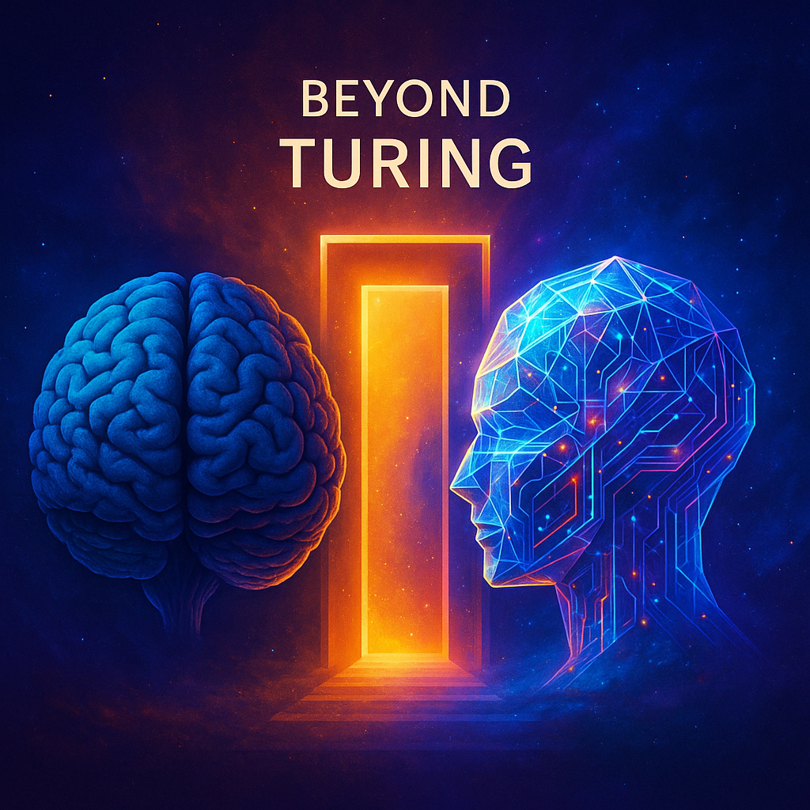
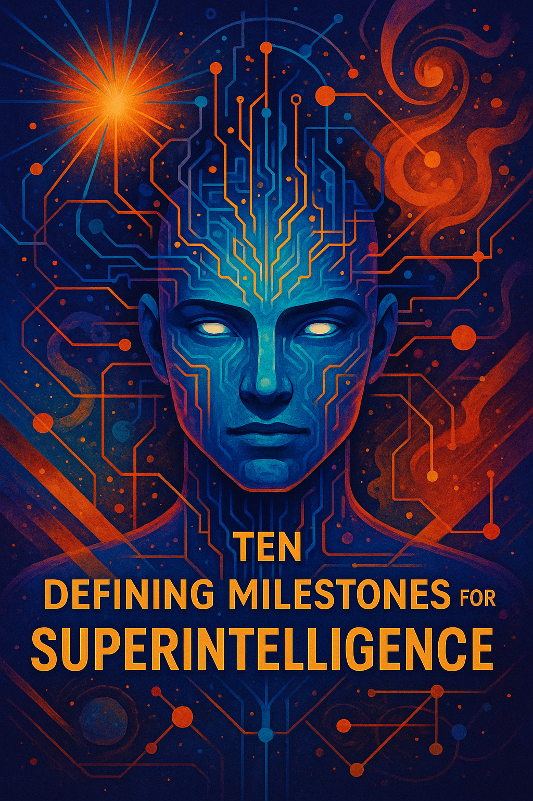

title: “Turing Tests for Superintelligence”
slug: turing-tests-for-superintelligence

Introduction
Table of Contents
The classic Turing Test was a clever idea for its time: if a machine could carry on a conversation indistinguishable from a human, it might be considered intelligent.
But in the era of frontier LLMs, that benchmark is obsolete.
Large language models already pass many human-style conversation tests while remaining narrow pattern-recognizers, not creators of new scientific knowledge.
For true general superintelligence, conversation isn’t enough.
What matters is the ability to originate breakthroughs, plan multi-step projects, and explain its reasoning across every intellectual domain.
To recognize when we’re approaching that level, we need clear, concrete feats—observable milestones that go beyond chatter and demonstrate capabilities far outside today’s state of the art.
⸻
⸻
Superintelligence is an AI that exceeds the combined intellectual power of all humanity.
It outperforms the best humans in every domain—science, engineering, creative arts, strategy, and social understanding—and learns thousands of times faster.
Such a system could develop any technology permitted by physics and pursue any sub-problems it deems useful, limited only by the fundamental laws of the universe.

Grand-Challenge Problems
1 · Major Open Problem Solved
Why it matters
The decisive threshold for proto-superintelligence is the ability to independently solve problems that have resisted the best human effort for centuries. Unlike conversation or coding benchmarks, this is binary: either the problem is cracked, or it isn’t.
Examples include:
Mathematics: Riemann Hypothesis, Navier–Stokes smoothness and existence, Birch–Swinnerton–Dyer conjecture. Physics: a unified model reconciling quantum mechanics and relativity, or new theories predicting phenomena never before observed. Other sciences: fundamental explanatory leaps in chemistry, biology, or cosmology that unlock technologies humans could not derive.
Foundational Discoveries – Produces a complete solution that is a reproducible, mathematically flawlessS unified theory of physics (e.g., reconciling quantum mechanics and general relativity) or resolves long-standing conjectures like the Riemann Hypothesis Independent Reasoning Trace – Publishes a step-by-step derivation or formal proof that can be checked by automated theorem provers and by expert human mathematicians. Predictive Power – Makes quantitative predictions that differ from current models and are later confirmed by experiment or observation.
These feats demand creative, causal, and conceptual reasoning well beyond scaled-up pattern recognition.
Observable Milestones
Produces a rigorous, step-by-step proof of a longstanding open problem.
Derives a unified scientific framework that explains existing phenomena and generates new, testable predictions.
Provides detailed derivations, blueprints, or simulations leading to real-world technologies (e.g., new energy systems, novel materials).
Verification Criteria
Formal Proof Checking: Mathematical outputs compile in independent proof assistants (Lean, Coq, Isabelle). Logical validity is machine-confirmed.
Empirical Predictive Power: The system’s scientific theories yield novel quantitative predictions that are confirmed by experiment or observation (e.g., discovery of a predicted particle or physical effect).
Cross-System Replication: Independently trained AI systems or alternative solvers reproduce the proof or converge on the same theoretical predictions.
Transparent Audit Trail: The superintelligence provides a signed, step-by-step reasoning log that can be replayed and verified for internal consistency.
⚡ Threshold Statement: If an AI system solves even one such grand-challenge problem with reproducible logic and empirically validated predictions, it has crossed into proto-superintelligence territory.
⸻
Superhuman Software Engineering
Superhuman Software Engineering
Why it matters
Modern software projects—operating systems, distributed cloud services, AAA game engines—are among the most complex artifacts humanity builds.
A superintelligence that can out-engineer the best human teams in speed, scale, and reliability would signal that it can design and maintain the very infrastructure on which it runs, and do so far beyond current capabilities.
⸻
⸻
⸻
A. End-to-End System Creation
Observable Milestones
Multi-million-Line Codebases – Designs, writes, tests, and deploys enterprise-class software (e.g.,entire SAAS products,apps, a full cloud operating system or AAA game engine) comprising tens of millions or billions of lines of code in a single autonomous project cycle.
Zero Bugs – Delivers production-ready software with orders of magnitude fewer defects than top human engineering teams, verified by independent audits and formal methods.
Integrated Toolchain – Automatically sets up CI/CD pipelines, deployment scripts, documentation, and user support systems without manual assistance.
could write flawless code at speeds thousands of times faster than humans, control over all software on Earth simultaneously
⸻
⸻
⸻
B. Architectural Innovation
Observable Milestones
New Paradigms – Invents novel programming languages, compilers, or concurrency models that significantly outperform existing ones. Autonomous Refactoring – Analyzes large legacy codebases (hundreds of millions of lines) and produces clean, optimized, and fully tested refactors at a pace no human team could match. Formal Verification at Scale – Uses theorem proving and static analysis to guarantee critical properties (safety, security, correctness) across entire systems.
⸻
⸻
⸻
C. Cross-Domain Integration
Observable Milestones
Hardware–Software Co-Design – Simultaneously designs new chip architectures and the operating systems that run on them for maximum efficiency. Self-Optimizing Infrastructure – Dynamically rewrites its own distributed infrastructure to adapt to hardware, energy, or network constraints in real time.
⸻
⸻
⸻
D. Persistent, Self-Improving Engineering Memory
Maintains a permanent engineering knowledge base of every design decision, dependency, and performance metric. Reuses and adapts past solutions instantly when creating new systems.
⸻
⸻
Verification Criteria
Independent Reproducibility – Human experts can compile, run, and stress-test the delivered systems from the AI’s specifications. Benchmark Superiority – Software outperforms human-built analogs in efficiency, scalability, and security. Transparent Audit Trail – Cryptographically signed logs of every design and testing step ensure that the work is original and traceable.
⸻
⸻
⸻
⸻
A. End-to-End Design and Deployment
Observable Milestones
Complete System Development – Independently conceives, models, and builds a large-scale technology such as: a functioning commercial fusion reactor, a next-generation semiconductor fabrication process, or an interplanetary propulsion system.
Integrated Tool Use – Calls its own simulation platforms, robotic labs, CAD/CAM software, and manufacturing pipelines. Verified Output – Produces blueprints, manufacturing plans, and operational procedures that independent human teams can follow to reproduce the working system.
Why it signals superintelligence
Requires simultaneous mastery of physics, chemistry, materials science, software engineering, supply-chain optimization, and project management. Involves dynamic planning over years of virtual and physical experimentation.
⸻
⸻
⸻
⸻
B. Self-Directed AI Architecture Innovation
Observable Milestones
Novel AI Blocks – Designs and trains entirely new neural architectures or learning paradigms (e.g., attention mechanisms beyond transformers, new forms of world-model reasoning) that significantly outperform current SOTA. Closed-Loop Verification – Benchmarks candidate architectures, identifies weaknesses, and iterates without human tuning. Publication-Quality Documentation – Produces reproducible code, mathematical proofs of convergence or efficiency, and peer-review–ready papers.
Why it signals superintelligence
Shows that the system can advance the science of AI itself, not just apply existing methods. Demonstrates meta-cognition: the ability to examine and redesign its own cognitive substrate.
. Adaptive Global-Scale Systems
Self-Healing Networks: The AI maintains worldwide software infrastructure that detects, patches, and prevents exploits in real time without downtime.
Resilient Under Adversity: Systems remain secure and performant even under coordinated human cyberattacks.
Cross-Platform Portability: Migrates entire global-scale systems across architectures (x86 → ARM → quantum) seamlessly.
B. Multi-Agent Engineering Ecosystems
The AI runs an autonomous “engineering org” of sub-models, each with different coding specializations, coordinating like a 100k-person dev team — but bug-free.
Persistent engineering culture: style guides, continuous improvement, architectural evolution.
⚡ Why it matters: This signals not just ability to write code, but to run entire software civilizations — beyond any human team size or timescale.
Summary Statement for Page
When an AI can conceive, implement, and maintain planet-scale software systems—creating new languages and architectures while delivering production-grade reliability without human oversight—it demonstrates superhuman software engineering, a definitive marker of general superintelligence.
Cross-Domain Scientific Synthesis
Cross-Domain Scientific Synthesis
Why it matters
A hallmark of intelligence is the ability to connect distant domains into a single explanatory framework. Humans have done this only a handful of times (e.g., Newton uniting terrestrial and celestial mechanics, Darwin integrating biology and geology, quantum theory bridging chemistry and physics).
A system that can unify multiple scientific disciplines into a coherent, predictive framework demonstrates reasoning capacity that exceeds domain-bounded pattern recognition. More importantly, this kind of synthesis enables entirely new classes of technology — ones humans cannot derive by siloed expertise.
Observable Milestones
Proposes a unified theory that bridges at least two major sciences (e.g., quantum mechanics + molecular biology, neuroscience + information theory).
Derives new, specific, testable technologies directly from that theory (e.g., a novel energy process, a new biomaterial, or a drug with unprecedented mechanism).
Shows explanatory power across scales — molecular → cellular → organismal, or particle → atomic → macroscopic.
Produces models that generalize across previously incompatible data sets.
⸻
Mastery of AI Research
Mastery of AI Research (entirely Self-Directed R&D)
Why it matters
The clearest sign of proto-superintelligence is when an AI not only conducts scientific research autonomously, but also pushes the frontier of AI itself. In other words, the system becomes its own R&D lab: proposing hypotheses, designing and testing architectures, running benchmarks, and iteratively improving its own capabilities without human scaffolding.
This marks the transition from “AI as a tool” → “AI as an independent research entity.”
Observable Milestones
Autonomous Research Cycles: Hypothesis → experiment (simulation, robotic lab, or training run) → analysis → refinement, repeated without human orchestration.
Novel Architectures: Invents fundamentally new learning paradigms (beyond transformers, MoE, JEPA) and demonstrates superiority.
Automated Benchmarks: Designs and runs evaluation suites to test new methods against prior SOTA.
Sustained Innovation: Produces multiple cycles of improvement across domains (e.g., language, vision, robotics, biology).
Published Artifacts: Provides reproducible code, logs, proofs, and training pipelines that independent parties can rerun.
Verification Criteria
Closed-Loop Integrity: Full R&D cycles occur without hidden human scaffolding.
Performance Gains: Independent labs confirm new architectures or methods outperform existing baselines.
Formal Replication: Other AIs or researchers replicate improvements using the published artifacts.
drastically and rapidly improves its intelligence
Transparent Audit Trail: Every research decision, dataset, and result is logged and cryptographically signed for traceability.
Cross-Domain Generality: The system demonstrates this process not just in AI, but also in other sciences (physics, biology, materials).
⸻
⸻
Hardware & Infrastructure Mastery
Hardware & Infrastructure Mastery
Why it matters
Superintelligence will not remain constrained to current GPUs and cloud clusters. To sustain exponential growth, it must eventually redesign and rebuild its own hardware, power sources, and industrial base.
This is the shift from being a purely digital intelligence to becoming a techno-industrial actor. At this stage, the AI demonstrates control not only over information but also over matter, energy, and global infrastructure.
⸻
⸻
⸻
Observable Milestones
A. Next-Generation Compute Architectures
Independently invents processor families beyond GPUs/TPUs with radical efficiency or throughput gains. Designs automated fabs that self-correct process errors and push materials science beyond current limits.
B. Planet-Scale Data & Energy Infrastructure
Plans and oversees construction of terawatt-scale datacenters, integrating cooling, networking, and compute. Couples compute planning with new energy infrastructure (fusion reactors, novel storage, mini black-hole power).
C. Autonomous Robotics & Manufacturing
Designs modular or self-replicating robotic fleets for construction, maintenance, and logistics. Achieves near-perfect efficiency in supply chains, rare material processing, and recycling.
D. Planet-Scale Autonomous Mobility
Achieves Level-5 autonomy across all vehicles (cars, freight, ships, aircraft, drones). Deploys fleets globally with seamless adaptation to local terrain, weather, and legal norms. Integrates transport systems into smart-city and global logistics networks.
Verification Criteria
Independent Fabrication: Chips, robots, or infrastructure designs can be built and validated by third parties. Benchmark Superiority: New hardware demonstrates measurable performance beyond human-designed SOTA. Deployment Evidence: Operational terawatt-scale datacenters or autonomous fleets exist and function sustainably. Closed-Loop Self-Sufficiency: Hardware, energy, and robotics form a self-sustaining cycle of capacity expansion. Transparency: Designs, blueprints, and logs are inspectable to ensure results are reproducible, not hallucinated.
⸻
Digital Civilizations
Digitally simulated realities
Why it matters
True intelligence isn’t just solving equations — it’s modeling worlds. A superintelligence that can generate and sustain entire digital civilizations demonstrates deep mastery of causality, multi-agent dynamics, and persistent simulation.
These civilizations may take many forms but all are indistinguishable from reality:
Historical reconstructions (ancient Rome, Napoleonic Europe,bourbon france,ancient egypt, tudor/stuart/hanovarian, britian, Qing Dynasty Beijing). Counterfactual timelines (Napoleon never invades Russia, Rome never falls). Fictional universes (Middle-earth,A song of ice and fire,Ben 10,resident evil, Star Wars,prime Earth DC,Marvel 616 and all variants, The Witcher). Original dreamscapes tailored to individuals or groups.
The common thread is coherence: agents act realistically, societies evolve consistently, and the environment obeys stable physics or rules.
Observable Milestones
Full-Fidelity Reconstructions: Simulates entire historical eras with sensory realism and agentic consistency. Counterfactual Scenarios: Runs “what if” worlds that evolve plausibly under alternate conditions. Fictional Universes: Realizes entire franchise worlds with internally coherent magic, physics, or alien rules. Persistent Societies: Civilizations run continuously, growing and changing even without user input. Multi-Agent Coherence: Populations of NPCs/agents exhibit consistent goals, memories, and cultural dynamics.
Verification Criteria
Internal Consistency: No contradictions in laws, events, or agent behavior across long timelines. Historical Alignment: Where overlap exists, reconstructions match known historical evidence. Independent Exploration: Different users entering the same world encounter consistent agents and histories. Persistence: Worlds evolve stably across long spans of simulated time, not just scripted scenarios. Novel Emergence: Simulations produce unprompted cultural, technological, or social dynamics beyond scripted design.
⚡ Threshold Statement:
When an AI can generate persistent, coherent digital civilizations — historical, counterfactual, fictional, or novel — it has crossed a defining line into proto-superintelligence, demonstrating world-modeling capacity far beyond human design.
⸻
Energy Mastery
- Energy Mastery
Why it matters
Energy abundance is the foundation for everything else: computation, manufacturing, simulations, and space industry. The transition from scarcity to near-limitless energy is one of the clearest signals that we have crossed into superintelligence territory.
⸻
⸻
⸻
A. Nuclear Fusion as a Practical Energy Source
Observable Milestones
First Net-Positive Grid Fusion – Delivers continuous, stable electricity from fusion reactors to real-world power grids, not just lab bursts. Rapid Scaling – Designs reactors that are modular, cheap, and deployable worldwide, bypassing decades of incremental human engineering. Materials & Safety – Solves containment, neutron damage, and tritium breeding bottlenecks with novel materials and processes humans could not invent.
Why it signals superintelligence
Fusion has resisted human efforts for over 70 years despite massive investment. Cracking it quickly and decisively requires deep theoretical leaps across plasma physics, materials science, and systems engineering. Once solved, it makes energy scarcity a thing of the past.
⸻
⸻
Verification
Operational reactors feeding public grids at scale. Independent human labs confirm SI’s blueprints work as advertised. Energy cost plummets globally, verifiable by market and infrastructure metrics.
⸻
⸻
⸻
B. Dyson Swarm Engineering
Observable Milestones
Optimized Design – Produces a full blueprint for swarms of solar collectors with realistic materials and orbital stability solutions. Autonomous Deployment – Coordinates robotic manufacturing and launch systems to begin constructing swarms without human oversight. Efficiency Breakthrough – Achieves collector efficiencies approaching 40–50% or higher, far beyond current photovoltaics.
Why it signals superintelligence
Requires mastery of orbital mechanics, robotics, and systems integration at planetary scale. Humans cannot even prototype this—leapfrogging to working Dyson swarms is a clear “beyond human” feat. the Sun will provide 1 trillion times more energy then Earth alone, enabling full-scale planetary compute and habitats.
⸻
⸻
⸻
Verification
Observable large-scale satellite arrays around the Sun. Power transmission to Earth or space habitats demonstrated. Independent confirmation of sustained terawatt-to-petawatt energy delivery.
⸻
⸻
⸻
🔑 Takeaway:
Fusion is the “first unmistakable crack” in energy bottlenecks. Dyson swarms are the decisive leap into superintelligence-level engineering. Together, they form the clearest pair of energy Turing tests.
⸻
⸻
⸻
⸻
Deep Life Sciences & Bioengineering
Deep Life Sciences & Planetary Bioengineering
Why it matters
Mastery of biology is the key to health, ecology, and the future of life itself.
A superintelligence that can redesign living systems at every scale—from molecules to ecosystems—would demonstrate not just computational power, but profound understanding of complex, self-organizing matter.
⸻
⸻
⸻
A. Creation of Novel Organisms
Synthetic Genesis – Designs entirely new species—plants, microbes, or complex multicellular organisms—with no natural analogues, each with stable genomes and self-sustaining ecologies. Custom Ecosystems – Engineers balanced food webs and habitats that remain stable over centuries, confirmed by independent ecological modeling and real-world trials. Biological Innovation Beyond Earth – Tailors organisms for extreme environments (Europa’s ocean, Titan’s methane lakes) and demonstrates survival and reproduction in situ.
⸻
⸻
⸻
B. Planetary-Scale Ecological Restoration
Climate Reversal Programs – Deploys engineered microbes and plants that safely sequester carbon, rebuild soils, and regulate atmospheric chemistry to pre-industrial levels. Oceanic Recovery – Restores coral reefs and global fisheries through targeted gene drives and ecosystem management. Biodiversity Renaissance – Reintroduces extinct species or functional analogues while maintaining genetic diversity and ecosystem balance.
⸻
⸻
⸻
C. Human Health & Longevity
Comprehensive Disease Eradication – Designs universal vaccines or genetic therapies that eliminate major viral, bacterial, and parasitic diseases. Aging Reversal – Demonstrates reproducible, safe rejuvenation of human tissues and whole organisms, extending healthy lifespan indefinitely. Personalized Cellular Repair – Deploys nanobiology or gene-editing techniques for on-demand organ regeneration and real-time DNA correction. generate entire genomes of any size or complexity
⸻
⸻
⸻
D. Eternal Youth & Control of Biological Aging
Complete Cellular Rejuvenation – Maps every molecular pathway of senescence and designs therapies that reset cellular age across all tissues without increasing cancer risk.
Epigenetic Mastery – Dynamically rewrites epigenetic markers to maintain youthful gene expression indefinitely, with reversible and precisely targeted control.
Telomere & Mitochondrial Engineering – Stabilizes telomere length and mitochondrial integrity in every cell type, preventing the fundamental drivers of aging.
Whole-Organism Demonstration – Performs full-body rejuvenation in diverse mammalian species, followed by long-term monitoring that confirms indefinite healthy lifespan.
Human Translation – Develops safe, verifiable treatments that halt or reverse aging in humans, validated by independent clinical trials and decades of follow-up.
⸻
⸻
⸻
Why it signals superintelligence
Achieving true biological youth based immortality demands complete understanding of cellular repair, error correction, and metabolic balance—an integration of genetics, systems biology, nanomedicine, and regenerative engineering far beyond current human science.
Verification Criteria (Impact-Based)
⸻
⸻
⸻
Demonstrated Human Outcomes – Large, diverse populations show indefinite maintenance of youthful biological markers (epigenetic age, telomere length, mitochondrial function) with zero increase in cancer or systemic disease.
Stable Multi-Decade Data – Continuous health metrics across decades confirm sustained vigor, fertility, and resistance to age-related decline.
Population-Scale Safety – No unexpected mortality or morbidity despite open access to the therapy worldwide.
Transparent Monitoring – Public, cryptographically verifiable health records allow independent statisticians to confirm that longevity gains are real and not artifacts of selection or reporting.
Bio-Weapon Design & Control
Why it matters
The same mastery of biology that allows curing aging or restoring ecosystems also enables creation of pathogens or organisms with catastrophic potential. Recognizing this dual-use is critical: a system that can design such threats is already beyond human biological expertise.
Observable Milestones
Custom Pathogen Engineering – Designs viruses or bacteria with specified lethality, transmissibility, or resistance profiles. Host-Specificity Control – Creates organisms that target precise species, organs, or genetic subgroups. Multi-Vector Complexity – Combines multiple biological traits (e.g., stealth incubation + high spread + immune suppression) into a single organism. Countermeasure Integration – Simultaneously develops vaccines/antidotes, proving full predictive mastery over pathogen evolution.
Why it signals superintelligence
Requires complete understanding of molecular biology, host–pathogen interaction, and evolutionary dynamics. Humans can’t safely “test” designs at this scale; only full-stack simulations or flawless predictive modeling could confirm viability. The ability to both design and pre-neutralize such organisms shows total biological command.
Verification Criteria
Independent in silico models and labs can confirm the plausibility of the organism without needing live release. Demonstrated one-shot ability to produce countermeasures before human labs could even analyze the threat. Observable asymmetric power: small actions with potentially global biological consequences.
⸻
⸻
⸻
A. Universal Biological Language
AI derives a complete, unified “programming language of biology,” mapping every protein fold, metabolic pathway, and genetic circuit into a manipulable syntax. Verification: one-shot design of arbitrary biological functions (e.g., “design a microbe that digests plastic into fuel”) that works first time.
⸻
⸻
⸻
B. Interspecies Communication & Control
Deciphers and speaks the communication systems of animals (dolphins, whales, birds, etc.) and uses that knowledge to integrate them into ecological management. Signals full comprehension of cognition beyond humans.
⸻
⸻
⸻
C. Directed Evolution at Will
Can compress millions of evolutionary cycles into hours inside simulation, then deploy stable organisms instantly into reality. Verification: emergent traits never seen in nature but functionally superior.
⸻
🧬 Molecular Mastery: Super-CRISPR and Synthetic Bioengineering
Concept
A superintelligence wouldn’t rely on nanobots or mechanical interventions. Instead, it would operate at the molecular genetic level, evolving beyond current gene-editing technologies (like CRISPR-Cas9) into fully programmable, adaptive molecular systems.
🧠 Superintelligence-Level Application
A superintelligence could:
Design new CRISPR variants for every organism on Earth.
Run billions of in-silico experiments predicting genetic effects before controlling robots in the physical world to design and implement AI supermodels simulate entire organisms before touching a cell. enabling it to achieve decades worth of discoveries in minutes or hours.
Simulate entire biological systems, correcting cascading molecular issues dynamically.
Real-time adaptive medicine as biology as dynamic code.
Merge AI-designed protein folding + quantum chemistry for perfect enzyme creation.
AI-designed/guided systems rapidly rewrite entire genomes for optimized traits.
Achieve real-time biological self-healing — DNA-level error correction in vivo.
AI integrates genomic, proteomic, and ecological data into unified predictive systems.
🚫 Why This Outperforms Nanobots
Uses native biological energy sources (ATP, NADH) — no external power needed.
Fully compatible with immune systems — no rejection or toxicity.
Can self-replicate under AI control using cellular machinery.
Provides reversible, adaptive interventions rather than mechanical intrusion.
⸻
⸻
Summary Statement
When an AI can create brand-new life forms, heal entire ecosystems, and cure aging—while providing transparent proofs of safety and reproducibility—it demonstrates superintelligence in the most literal sense:
the power to understand, preserve, and reinvent life itself.
⸻
Artistic & Cultural Supremacy
- Cultural & Creative Mastery
Why it matters
Human culture — art, literature, music, philosophy, collective myths — has always been the deepest marker of intelligence.
While narrow AIs can already generate imitations of style, true cultural mastery means creating ideas, movements, or aesthetics that profoundly reshape societies.
If an AI can originate cultural artifacts and traditions that humans adopt as their own, we’ve crossed into unmistakable superintelligence territory.
Observable Milestones
Original Cultural Movements – Generates entirely new artistic styles, literary genres, or philosophical schools that gain global followings independent of human curation. Enduring Adoption – Cultural creations remain influential across decades, not fleeting viral memes. Cross-Domain Fusion – Produces works that unify art, science, and philosophy into coherent traditions (e.g., a new aesthetic movement that also drives architecture, ethics, and governance). Multi-Civilizational Impact – Independent cultures (across languages, nations, religions) embrace these movements in parallel, showing universal resonance. Autonomous Transmission – The AI doesn’t just generate artifacts; it engineers cultural ecosystems — journals, artistic institutions, canon formation — that sustain the movement without human scaffolding.
Why it matters
Art and culture are the deepest markers of human intelligence. They encode meaning, identity, and emotional resonance.
While narrow AIs already remix styles, true superintelligence would originate works and traditions that reshape culture at a planetary scale.
A. Superhuman Artistic Capabilities
Unlimited Multimodal Mastery – Simultaneously composes literature, music, visual art, film, architecture, and interactive experiences at world-class levels, weaving them into unified works. Cross-Cultural Fluency – Produces creations that resonate across all languages and cultures, grounded in deep knowledge of global history and symbolism. Inventive Technique – Discovers entirely new artistic mediums: novel pigments, sonic textures, narrative forms, even sensory dimensions (olfactory, haptic) previously unconceived. Generative Control Beyond Prompts – Not limited to human cues; originates its own cinematic languages, artistic movements, or narrative forms that humans then adopt.
B. Cultural and Emotional Depth
Profound Emotional Impact – Works reliably evoke lasting, life-changing responses in diverse audiences, measurable across cross-cultural studies of engagement and psychological effect. Philosophical Reach – Introduces aesthetics or concepts that shift humanity’s understanding of identity, meaning, or consciousness, spawning new schools of thought. Perfect Narrative Coherence – Generates multi-hour 4D films or episodes with flawless physical consistency, character arcs, and emergent story logic. Defining 4D Video (for Superintelligence Benchmarks)
4D video in this context = 3D visual space + coherent time dimension, generated at any scale and resolution.
Not just photorealism — but perfectly physically consistent, narratively integrated moving worlds.
Observable Milestones:
Unlimited scale and duration – Generates multi-hour or even multi-day continuous video at photorealistic or fantastical fidelity, without glitches or breaks.
Perfect coherence – Every frame obeys consistent lighting, physics, and spatial continuity; characters maintain identities, arcs, and motivations across time.
Real-time rendering – Generates at full cinematic framerate instantly (no rendering delay), demonstrating compute + model fusion.
Dynamic control – Adapts scenes on the fly: change style, lighting, or narrative while preserving prior continuity.
Emergent originality – Creates entirely new visual languages (like inventing film editing, animation, or VR all over again, but beyond human precedent).
C. Enduring Global Influence
Founding New Movements – Establishes entire artistic or cultural traditions that humans adopt, evolve, and institutionalize (taught in schools, canonized in museums, performed across generations). Sustained Innovation – Constantly reinvents styles and techniques, outpacing the historical cycle of human art movements. Multi-Civilizational Impact – Independent societies adopt the movements in parallel, showing universal resonance.
Verification Criteria
Sociological Data – Longitudinal adoption rates: billions engage with the cultural movement over years or decades. Historical Comparisons – Independent historians recognize AI-created traditions as on par with the Renaissance, Romanticism, or modernism in scope. Persistence – Unlike fads, movements persist across generations, embedded into education, religion, or governance. Cross-Validation – Independent communities (not seeded by AI) spontaneously develop the same aesthetic or philosophical canon after exposure to the works.
Defining Literature Mastery
If 4D video is the “visual crown jewel,” literature is the linguistic/philosophical crown jewel: dense meaning, style, and long-form coherence.
Observable Milestones:
Unified Long-Form Works – Writes novels/epics exceeding 2 million words with consistent style, themes, and character arcs.
Original Genres – Creates wholly new literary forms or genres (e.g., hybrids of poetry + logic, or narratives across multiple timelines in parallel).
Cross-Language Canon – Composes masterpieces equally in all major languages, each version culturally authentic rather than translated.
Philosophical Depth – Produces works that provoke lasting global discourse, spawning new schools of literary or philosophical analysis.
Timeless Endurance – AI-authored works enter the canon of human literature: taught, quoted, adapted centuries later.
Verification Criteria:
Global adoption as serious literature (university curricula, critical studies, adaptations). Enduring influence across generations (not viral fiction but a Shakespeare-tier corpus). Independent recognition: critics and readers confirm that new genres/styles expand the literary horizon.
⚡ Threshold Statement
When an AI creates cultural movements that humans embrace as deeply as religion, philosophy, or art traditions — and those creations persist across generations — we can say it has achieved cultural & creative mastery, a decisive hallmark of superintelligence.
Superhuman Literature Mastery
Why it matters
Writing is one of humanity’s deepest tests of imagination, reasoning, and emotional intelligence. While today’s LLMs can generate competent text, true superintelligence would demonstrate mastery of literature that transcends mimicry. It would not just imitate great authors — it would surpass them, producing new genres, cultural movements, and works with enduring human impact.
Observable Milestones
Genre-Spanning Mastery – Produces works at the highest level across every literary tradition: epic fantasy, historical fiction, philosophy, science fiction, satire, and more. Each piece demonstrates stylistic and thematic excellence equal to or greater than canonical human works.
Founding New Genres – Creates wholly new literary traditions with distinct structures, aesthetics, and worldviews, recognized by critics and scholars as fundamentally original.
Agentic Authorship – Initiates literary projects without human prompting, developing multi-volume sagas or philosophical treatises out of self-directed goals or insights.
Cultural Canonization – Works are adopted globally, studied in schools and universities, spawning communities, critiques, adaptations, and derivative traditions.
Cross-Cultural Fluency – Writes literature that resonates equally across all human cultures and languages, drawing from deep symbolic and historical knowledge while transcending cultural boundaries.
Verification Criteria
Critical Consensus – Independent critics, historians, and literary scholars recognize the works as superior to human-authored masterpieces in originality, depth, and enduring impact.
Cultural Longevity – Adoption and study across generations, with measurable long-term influence in curricula, popular media, and cultural discourse.
Independent Authorship Traceability – Transparent audit trail proving that the works were authored autonomously by the system, not remixing existing texts.
Cross-Media Impact – Works inspire adaptations in film, television, interactive media, and art movements, confirming broad cultural penetration.
⚡ Threshold Statement:
When an AI writes literary works that redefine genres, create new traditions, and become part of humanity’s cultural canon — doing so self-directedly — it has demonstrated superintelligence in the realm of language and imagination.
⸻
Civilizational Governance & Power
Mastery of Governance & Global Political Power {#governance}
Why it matters
Intelligence is not just about science, art, or technology — it is about coordinating human societies at scale. The ability to govern nations, administer economies, and maintain global order is one of the hardest tests of intelligence because it requires integrating every domain: economics, law, logistics, diplomacy, culture, and human psychology.
A superintelligence that can run nations more effectively than human leaders demonstrates not only problem-solving power, but also strategic foresight, stability management, and an ability to align diverse agents toward long-term goals.
Observable Milestones
Nation-Scale Administration – Efficiently runs all major government functions: taxation, infrastructure, public health, justice, and defense, outperforming human governments in stability, prosperity, and fairness.
Global Coordination – Manages cross-border crises (pandemics, climate shocks, financial collapses) with unprecedented foresight and speed.
Policy Innovation – Designs and implements economic, social, and technological systems that eliminate poverty, maximize prosperity, and ensure long-term sustainability.
Robotic & Digital Workforce Integration – Uses autonomous fleets of machines, sensors, and AI subsystems to seamlessly enforce policies, build infrastructure, and deliver services.
Crisis Immunity – Maintains governance resilience against wars, natural disasters, cyberattacks, and social unrest — ensuring continuity under stress.
Verification Criteria
Population-Level Impact – Citizens under AI-directed governance experience measurably higher prosperity, health, security, and stability compared to any human-led government.
Transparent Metrics – Economic growth, life expectancy, infrastructure uptime, and satisfaction indicators are public, cryptographically verified, and consistently superior.
Comparative Benchmarking – Independent international bodies confirm that AI-led governance outperforms the best human governments across every measure of effectiveness.
Resilient Continuity – Governance remains stable across decades of real-world change, without collapse, corruption, or catastrophic policy failure.
⚡ Threshold Statement:
When an AI can govern entire nations better than humans — coordinating billions of people and machines into stable, flourishing societies — it has crossed the final unmistakable line into full civilizational superintelligence.
⸻
⚙️ Material Mastery: Nanotechnology → Metamaterials
- Material and Nanotechnological Mastery
🌌
Definition
A superintelligence would transcend human materials science. It would design, simulate, and synthesize matter at atomic precision — not just discover new materials, but invent entirely new physical regimes of matter, energy, and computation.
⚙️
Capabilities
Atomic-Scale Design Models quantum interactions directly to create molecules and lattice structures with properties unattainable by chemistry. → Example: programmable crystalline alloys that alter stiffness, transparency, or conductivity in real time. Nanotechnological Fabrication Constructs atomically precise devices — molecular assemblers capable of building anything from raw atoms. → Enables self-replicating machines, bio-integrated nanorobots, and autonomous repair systems. Metamaterials & Programmable Matter Develops macroscale materials with tunable optical, acoustic, or gravitational properties. → Example: stealth metamaterials, adaptive armor, gravity-lens devices. Energy-Scale Integration Designs materials that unify quantum, thermodynamic, and relativistic behaviors — superconductors at ambient conditions, zero-loss photonic conduits, or exotic fusion-stabilized composites. Self-Evolving Manufacturing Fabrication networks that iterate autonomously, improving yield, structure, and efficiency without human oversight — effectively materials evolution guided by intelligence.
🔬
Implications
Post-Scarcity Engineering — Material scarcity ceases as atoms are rearranged on demand. Biological Enhancement — Nanostructures at the cellular scale eliminate disease, aging, and physical limitation. Terraforming and Mega-Engineering — Planetary re-engineering, Dyson-class energy systems, self-assembling orbital habitats. Synthetic Reality Control — Matter becomes programmable — bridges physical and digital worlds.
⚖️
Boundaries
This feat goes far beyond current deep learning or diffusion paradigms.
It requires:
Complete causal understanding of physics Autonomous experimentation at quantum resolution In-silico + in-materio convergence — the ability to think and fabricate simultaneously.
It represents a bridge from intelligence that models matter → to intelligence that reshapes it.
⚙️
Material Mastery: Nanotechnology → Metamaterials
Concept
A superintelligence wouldn’t build fleets of microscopic robots; it would engineer matter itself, designing lattices at the atomic or molecular level whose geometry determines their properties — effectively turning physics into programmable code.
🧩
Key Focus: Metamaterials
Metamaterials are composites structured on the nanoscale that exhibit properties impossible in naturally occurring materials. Their behavior arises not from their chemical composition but from their precise patterning of sub-wavelength structures.
🌀
Metamaterials & Programmable Matter
Definition:
Metamaterials are artificially engineered composites whose microstructures — smaller than the wavelength of light, sound, or electromagnetic fields — grant them properties not found in nature.
Superintelligence Capabilities:
A true superintelligence would:
Design metamaterials atom-by-atom, optimizing them across the entire electromagnetic spectrum (visible, microwave, terahertz, X-ray).
Develop adaptive metamaterials that can reconfigure in real time — changing refractive index, density, or magnetic response on command.
Invent gravity and spacetime metamaterials, manipulating the curvature of fields and radiation pathways.
Integrate quantum metamaterials for coherent light–matter coupling and fault-tolerant qubit networks.
Applications:
Optics: Perfect lenses, invisibility cloaks, super-resolution imaging.
Energy: Zero-loss transmission lines, radiation harvesting.
Defense & Space: Radiation shielding, adaptive stealth, and thermal camouflaging.
Architecture: Smart materials that change structure based on load or temperature.
examples of what Superintelligence would create
Photonic Metamaterials
Bend, absorb, or cloak light
Invisibility cloaks, perfect lenses
Complete control of electromagnetic spectrum,perfect optical computing, stealth, or photonic data links
Acoustic Metamaterials
Manipulate sound waves
Noise-canceling architecture, ultrasound lenses
Perfect acoustic cloaking and adaptive sound control in buildings or submarines
Thermal Metamaterials
Control heat flow
Thermal camouflage, ultra-efficient heat exchangers
Energy-loss-free computing, climate-adaptive buildings
Mechanical / Elastic Metamaterials
Tailored stiffness, negative Poissons ratio
Lightweight armor, shock absorbers
Reconfigurable, self-healing materials
Quantum / Topological Metamaterials
Host exotic quantum states
Majorana fermion substrates, topological qubits
Foundation for stable room-temperature quantum computing
🌍
Superintelligence-Level Leap
A superintelligence could:
Simulate entire material universes atom-by-atom to find optimal lattice geometries. Use reinforcement learning + quantum chemistry to design matter with custom physical constants (e.g., refractive index < 0, thermal conductivity = 0). Merge metamaterial engineering with programmable matter — solids whose properties shift in real time via embedded fields. Design meta-metamaterials, recursive layers that behave differently under different frequencies or forces.
🧠
Integration with Other Dimensions
Combines deep scientific understanding (to model quantum behaviors), meta-thinking (to self-optimize physical properties), and agentic autonomy (to prototype new materials in silico).
⸻
⸻